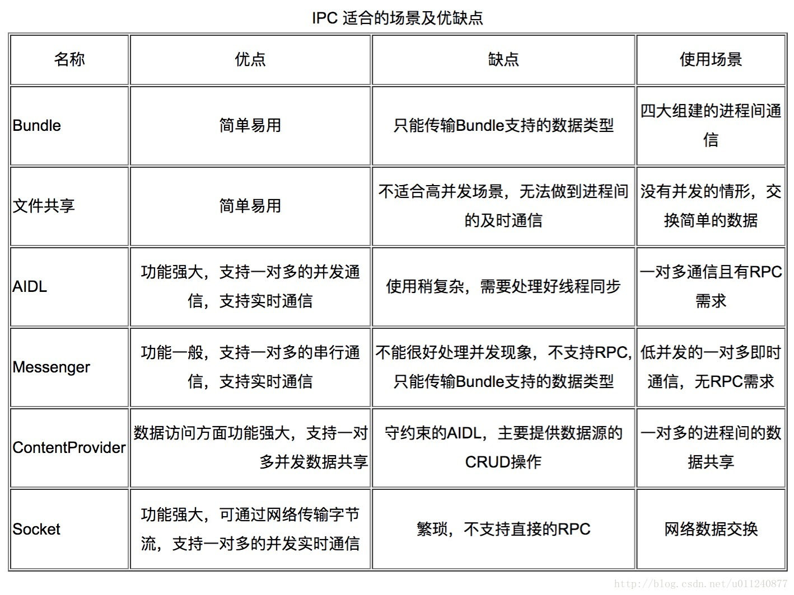

进程是程序的一个运行实例，以区别于"程序这一静态概念；而线程则是CPU调度的基本的单位。
如果两个对象处于同一个进程空间中，那么内存区域应该是可以共享的(操作系统基本知识)
也就是不同进程间内存区域是不共享的，并不是不同的"程序"
同时在官网，我们可以找到下面这句话：
By default, all components of the same application run in the same process and most applications should not change this. However, if you find that you need to control which process a certain component belongs to, you can do so in the manifest file. 官网介绍地址
上面的文档告诉我们，我们所创建的四大组件默认都在主线程中
Tips：我们可以通过 android:process 来给Activity配置一个单独的进程。官网介绍地址
4.基本验证
创建三个Activity，基本代码如下：
public class MainActivity extends AppCompatActivity {
public static final String TAG = "print_value";
public static int value = -1;
@Override
protected void onCreate(Bundle savedInstanceState) {
super.onCreate(savedInstanceState);
setContentView(R.layout.activity_main);
setTitle("MainActivity");
findViewById(R.id.to_next_activity).setOnClickListener(new OnClickListener() {
@Override
public void onClick(View view) {
value = 1;
Log.i(TAG, value + "=====to==Main2Activity===========");
Intent intent = new Intent(MainActivity.this, Main2Activity.class);
startActivity(intent);
}
});
findViewById(R.id.to_next_activity2).setOnClickListener(new OnClickListener() {
@Override
public void onClick(View view) {
value = 2;
Log.i(TAG, value + "====to=====Main3Activity=========");
Intent intent = new Intent(MainActivity.this, Main3Activity.class);
startActivity(intent);
}
});
}
}
public class Main2Activity extends AppCompatActivity {
@Override
protected void onCreate(Bundle savedInstanceState) {
super.onCreate(savedInstanceState);
setContentView(R.layout.activity_main2);
setTitle("Main2Activity");
Log.i(TAG, value + "=====this==Main2Activity===========");
}
}
public class Main3Activity extends AppCompatActivity {
@Override
protected void onCreate(Bundle savedInstanceState) {
super.onCreate(savedInstanceState);
setContentView(R.layout.activity_main3);
setTitle("Main3Activity");
Log.i(TAG, value + "=====this==Main3Activity===========");
}
}
清单配置
<activity
android:name=".Main3Activity"
android:process=":remote" />
<activity android:name=".Main2Activity" />
<activity android:name=".MainActivity">
<intent-filter>
<action android:name="android.intent.action.MAIN" />
<category android:name="android.intent.category.LAUNCHER" />
</intent-filter>
</activity>
注意Main3Activity的清单配置
我们将得到如下打印：
1=====to==Main2Activity=========== 1=====this==Main2Activity=========== 2====to=====Main3Activity========= -1=====this==Main3Activity===========（得到如下打印，记得切换Logcat的展示进程）
结论： 这个打印足以证明多进程之前内存区域不共享
常见的跨进程方式有：
AIDL ，Messager，Broadcast，ContentProvider ，甚至还可以使用文件和Scoket
针对几种方式，《Android艺术开发探索》提供了如下对比图

另外针对绑定服务和对象，官方文档也为我们提供了明确的说明：
针对绑定服务 绑定服务概览 针对对象 Parcelable 和 Bundle
此外在跨程传递数据的时候，数据传递的大小也是有限制的
Binder 事务缓冲区的大小固定有限，目前为 1MB，由进程中正在处理的所有事务共享。由于此限制是进程级别而不是 Activity 级别的限制，因此这些事务包括应用中的所有 binder 事务，例如 onSaveInstanceState，startActivity 以及与系统的任何互动。超过大小限制时，将引发 TransactionTooLargeException。
如下代码可以测试：
byte[] data = new byte[1024*1024];
intent.putExtra("data", data);
AIDL是Android Interface Definition Languagee的缩写。从名称看它是一种语言，而且是专门用于描述接口的语言。准确的来说，他是用于定义客户端、度无端通信接口的一种描述语言。
2.1 调用 IPC 方法,如要调用通过 AIDL 定义的远程接口，调用类必须执行以下步骤：
2.1.1 在项目的 src/ 目录中加入 .aidl 文件。
2.1.2 声明一个 IBinder 接口实例（基于 AIDL 生成）。
2.1.3 实现 ServiceConnection。
2.1.4 调用 Context.bindService()，从而传入您的 ServiceConnection 实现。
在 onServiceConnected() 实现中，您将收到一个 IBinder 实例（名为 service）。调用 YourInterfaceName.Stub.asInterface((IBinder)service)，以将返回的参数转换为 YourInterface 类型。
调用您在接口上定义的方法。您应始终捕获 DeadObjectException 异常，系统会在连接中断时抛出此异常。您还应捕获 SecurityException 异常，当 IPC 方法调用中两个进程的 AIDL 定义发生冲突时，系统会抛出此异常。
如要断开连接，请使用您的接口实例调用 Context.unbindService()。
2.2 创建
通过上面的方式，系统将帮我们生成如下模板代码：
// Add.aidl
package me.fenfei.app.aidl;
// Declare any non-default types here with import statements
interface Add {
/**
* Demonstrates some basic types that you can use as parameters
* and return values in AIDL.
*/
void basicTypes(int anInt, long aLong, boolean aBoolean, float aFloat,
double aDouble, String aString);
}
清空body，定义我们的业务需求方法
// Add.aidl
package me.fenfei.app.aidl;
// Declare any non-default types here with import statements
interface Add {
//此处简单的定义了两个数相加并返回相加的和
int add(int a,int b);
}
执行Rebulid Project。在工程的下面路径下，相同的包名内；将看到系统工具为我们生成的对应 Add.aidl的 Add.java 类
/build/generated/aidl_source_output_dir/debug/compileDebugAidl/out
代码如下：
/*
* This file is auto-generated. DO NOT MODIFY.
*/
package me.fenfei.app.aidl;
// Declare any non-default types here with import statements
public interface Add extends android.os.IInterface
{
/** Default implementation for Add. */
public static class Default implements me.fenfei.app.aidl.Add
{
@Override public int add(int a, int b) throws android.os.RemoteException
{
return 0;
}
@Override
public android.os.IBinder asBinder() {
return null;
}
}
/** Local-side IPC implementation stub class. */
public static abstract class Stub extends android.os.Binder implements me.fenfei.app.aidl.Add
{
private static final java.lang.String DESCRIPTOR = "me.fenfei.app.aidl.Add";
/** Construct the stub at attach it to the interface. */
public Stub()
{
this.attachInterface(this, DESCRIPTOR);
}
/**
* Cast an IBinder object into an me.fenfei.app.aidl.Add interface,
* generating a proxy if needed.
*/
public static me.fenfei.app.aidl.Add asInterface(android.os.IBinder obj)
{
if ((obj==null)) {
return null;
}
android.os.IInterface iin = obj.queryLocalInterface(DESCRIPTOR);
if (((iin!=null)&&(iin instanceof me.fenfei.app.aidl.Add))) {
return ((me.fenfei.app.aidl.Add)iin);
}
return new me.fenfei.app.aidl.Add.Stub.Proxy(obj);
}
@Override public android.os.IBinder asBinder()
{
return this;
}
@Override public boolean onTransact(int code, android.os.Parcel data, android.os.Parcel reply, int flags) throws android.os.RemoteException
{
java.lang.String descriptor = DESCRIPTOR;
switch (code)
{
case INTERFACE_TRANSACTION:
{
reply.writeString(descriptor);
return true;
}
case TRANSACTION_add:
{
data.enforceInterface(descriptor);
int _arg0;
_arg0 = data.readInt();
int _arg1;
_arg1 = data.readInt();
int _result = this.add(_arg0, _arg1);
reply.writeNoException();
reply.writeInt(_result);
return true;
}
default:
{
return super.onTransact(code, data, reply, flags);
}
}
}
private static class Proxy implements me.fenfei.app.aidl.Add
{
private android.os.IBinder mRemote;
Proxy(android.os.IBinder remote)
{
mRemote = remote;
}
@Override public android.os.IBinder asBinder()
{
return mRemote;
}
public java.lang.String getInterfaceDescriptor()
{
return DESCRIPTOR;
}
@Override public int add(int a, int b) throws android.os.RemoteException
{
android.os.Parcel _data = android.os.Parcel.obtain();
android.os.Parcel _reply = android.os.Parcel.obtain();
int _result;
try {
_data.writeInterfaceToken(DESCRIPTOR);
_data.writeInt(a);
_data.writeInt(b);
boolean _status = mRemote.transact(Stub.TRANSACTION_add, _data, _reply, 0);
if (!_status && getDefaultImpl() != null) {
return getDefaultImpl().add(a, b);
}
_reply.readException();
_result = _reply.readInt();
}
finally {
_reply.recycle();
_data.recycle();
}
return _result;
}
public static me.fenfei.app.aidl.Add sDefaultImpl;
}
static final int TRANSACTION_add = (android.os.IBinder.FIRST_CALL_TRANSACTION + 0);
public static boolean setDefaultImpl(me.fenfei.app.aidl.Add impl) {
if (Stub.Proxy.sDefaultImpl == null && impl != null) {
Stub.Proxy.sDefaultImpl = impl;
return true;
}
return false;
}
public static me.fenfei.app.aidl.Add getDefaultImpl() {
return Stub.Proxy.sDefaultImpl;
}
}
public int add(int a, int b) throws android.os.RemoteException;
}
2.3 基本使用：
public class Main4Activity extends AppCompatActivity {
private Add mAdd;
@Override
protected void onCreate(Bundle savedInstanceState) {
super.onCreate(savedInstanceState);
setContentView(R.layout.activity_main4);
bindService();
findViewById(R.id.sum_bt).setOnClickListener(new View.OnClickListener() {
@Override
public void onClick(View view) {
try {
int sum = mAdd.add(1, 1);
Log.i(TAG, "====sum = " + sum);
} catch (RemoteException e) {
e.printStackTrace();
}
}
});
}
private void bindService() {
Intent intent = new Intent();
Class clazz = DoService.class;
intent.setClassName(clazz.getPackage().getName(), clazz.getName());
bindService(intent, new ServiceConnection() {
@Override
public void onServiceConnected(ComponentName name, IBinder service) {
mAdd = Add.Stub.asInterface(service);
}
@Override
public void onServiceDisconnected(ComponentName name) {
}
}, BIND_AUTO_CREATE);
}
}
2.4 测试
可能有同学会说，我直接调用不行吗？为什么非得这样写，在同一个app里面又不是访问不到
public class Main4Activity extends AppCompatActivity {
@Override
protected void onCreate(Bundle savedInstanceState) {
super.onCreate(savedInstanceState);
setContentView(R.layout.activity_main4);
bindService();
findViewById(R.id.sum_bt).setOnClickListener(new View.OnClickListener() {
@Override
public void onClick(View view) {
try {
int sum = stubBinder.add(1, 1);
Log.i(TAG, "====sum = " + sum);
} catch (RemoteException e) {
e.printStackTrace();
}
}
});
}
private DoService.StubBinder stubBinder;
private void bindService2() {
Intent intent = new Intent(this, DoService.class);
bindService(intent, new ServiceConnection() {
@Override
public void onServiceConnected(ComponentName name, IBinder service) {
try {
stubBinder = (DoService.StubBinder) service;
} catch (Exception e) {
e.printStackTrace();
}
}
@Override
public void onServiceDisconnected(ComponentName name) {
}
}, BIND_AUTO_CREATE);
}
}
如果你按照上面的写法去写，你将得到下面的错误
java.lang.ClassCastException: android.os.BinderProxy cannot be cast to me.fenfei.app.test2.DoService$StubBinder
at me.fenfei.app.test2.Main4Activity$3.onServiceConnected(Main4Activity.java:87)
at android.app.LoadedApk$ServiceDispatcher.doConnected(LoadedApk.java:1730)
at android.app.LoadedApk$ServiceDispatcher$RunConnection.run(LoadedApk.java:1762)
at android.os.Handler.handleCallback(Handler.java:873)
at android.os.Handler.dispatchMessage(Handler.java:99)
at android.os.Looper.loop(Looper.java:193)
at android.app.ActivityThread.main(ActivityThread.java:6669)
at java.lang.reflect.Method.invoke(Native Method)
at com.android.internal.os.RuntimeInit$MethodAndArgsCaller.run(RuntimeInit.java:493)
at com.android.internal.os.ZygoteInit.main(ZygoteInit.java:858)
可以看到在跨进程通讯的时候，我们得到的不是原始对象，而是一个代理对象，这个代理对象作为一个中间桥梁帮助我们进行通讯
还有另外一条是，在跨进程，多app的时候，我们是获取不到DoService这个类的，这个类只存在某一个apk中